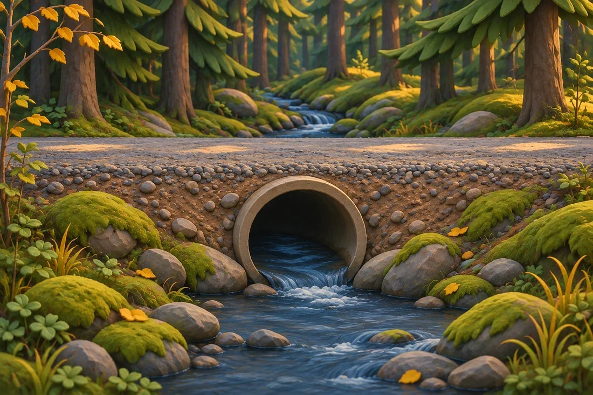

Om bilden
Här rinner bäcken genom en öppen trumma vid lugnt flöde. Den lilla öppningen under hela vägbanken visar varför en trumma som inte räcker till, eller är blockerad, kan bromsa flödet och få vatten att samlas på uppströmssidan. Bilden visar en tänkt plats och är varken dokumentär eller en konstruktionsritning.
Halvtimmen · Klimat och miljö
När skogsvägen blir en vattenväg
Fördjupning. En grusväg genom skogen är ritad för att leda människor och virke. I ett skyfall kan den också leda vatten. Då räcker det inte att fråga om själva vägen håller. Minst lika viktigt är vart vattnet tar vägen när det lämnar den.
Den 24 november har Skogsstyrelsen aviserat en konferens om hur skogen kan anpassas till ett förändrat klimat. En strategi för skogsbilvägar står bland de aviserade frågorna. Det är en bra anledning att uppmärksamma en detalj som är lätt att köra över utan att tänka på den: vägtrumman, röret som låter en bäck eller annat vatten passera under vägen. Enligt programmet är starten kl. 10. Det här är en fördjupning om programfrågan, inte en rapport om vad deltagarna har kommit fram till.
Vattnet följer inte fastighetsgränsen
Tänk dig en väg som löper nedför en skogssluttning. Vid kraftigt regn kan vägbanan och diket samla vatten från marken runtomkring och leda det vidare. Om vattnet dessutom kommer till en passage under vägen som inte räcker till kan det stiga, rinna över vägbanan eller ta en annan väg. När vatten samlas till ett kraftigare flöde kan det föra med sig jord och grus. Det som börjar i ett skogsdike kan därför få följder för en allmän väg längre ned.
Det är inte bara ett tankeexempel. Efter skyfallen i Västernorrland i september 2025 gick Skogsstyrelsen igenom ett urval av Trafikverkets skadepunkter och de områden som avvattnades mot dem. Vid flera skadepunkter anslöt en skogsbilväg till den allmänna vägen eller ledde vatten mot Trafikverkets vägdike. Analysen visar varför skogsvägar är värda att undersöka. Den kan däremot inte tala om exakt hur stor del av skadorna som berodde på dem, vare sig vid varje punkt eller i länet som helhet.
Samma passage för vatten och fisk
I sin plan för 2026–2030 föreslår Skogsstyrelsen bland annat fler trummor där det behövs och byte av feldimensionerade trummor. Passagerna ska tåla höga flöden utan att hindra fiskvandring. Det senare är en egen fråga: vatten kan passera genom ett rör som ändå blir ett hinder för fisk, till exempel om utloppet ligger för högt.
Det avgörande är alltså inte bara hur grovt röret är. Man behöver se var vattnet samlas, var det kan passera och vad som ligger nedströms. Det är där skogsvägens osynliga uppgift blir synlig: ett beslut om en väg är också ett beslut om hur den delen av landskapet avvattnas.